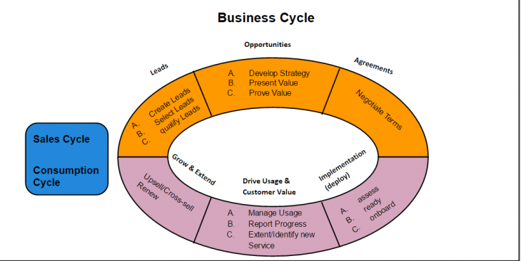
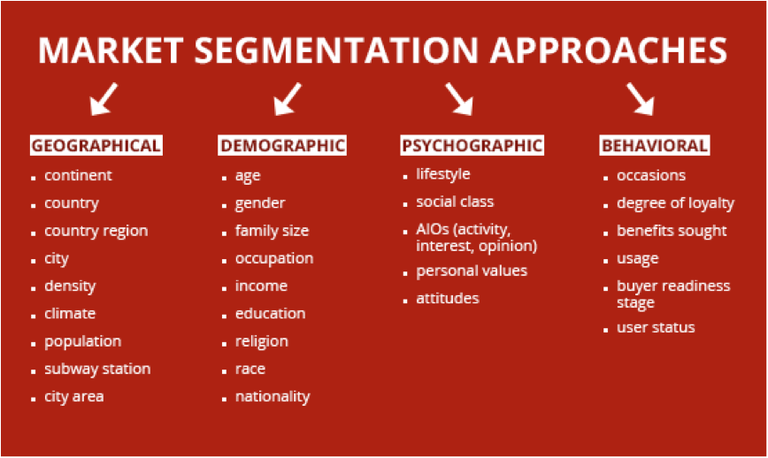

Before we can custumize a Free SMB CRM Dreamlancer tool, We must first comment on the best practices of a sale stratagy. Based of the Use case for a SMB CRM, Project Ronin will be developed in to a solution that will be a solution to the Problems of Independent Account executives in any indestry for all Start ups customization for all industry in the USA:)
1. Product Knowledge
This step is fairly straight forward, but it is also the great undoing of many a technical expert turned sales person. When one is extremely well versed in a particular product especially a technical one, it is easy to get caught up in a monologue of all the great features it provides.
The technical expert turned sales person is so eager to explain how the product works or why it’s unique that the benefits to the customer are left out of the discussion. Never assume that a prospect will easily link a feature to a benefit. That relationship must be stated clearly (something done in the presentation step 4, after the needs assessment step 5). The acquiring of product knowledge for a “technician” therefore, is less about the features of the product itself, and more about how the customer will benefit from those features. When discussing product, the technicians mantra should be; “So what?” Consider those two words to be what the prospect thinks every time a feature is mentioned, and re-learn your product from that perspective.
2. Prospecting
Prospecting, just as the word implies, is about searching for new customers. Like product knowledge, this step may seem fairly straight forward but upon closer examination it becomes more complex. The key to prospecting effectively is knowing where to dig and what to look for. It’s also important to distinguish between a lead, a prospect, and a qualified prospect. The most important element in this step is to create a profile of existing customers. This may have been done at your company, but have approach tactics (step3) been tailored to match each profile. For instance, you may have identified the following major market segments: State Governments, County Governments, Consulting Firms, Federal Agencies, Utilities, Universities, but have you fully profiled each of these in order to adjust marketing tactics appropriately? A direct mail, seminar invitation might work well to generate State Government leads, but will it be effective in developing Consulting Firm leads? For each market segment do you really know what the ideal customer looks like? These questions should be answered fully in the “Tactics” portion of a marketing plan.
In the broadest sense, prospecting is an ongoing process that everyone in the company (particularly the sales force) should be involved in. This simply means everyone should have their “prospecting radar” up when they are out and about in the world. Very often, a great lead turned customer was first discovered after being heard or seen in the news at a party, or event, etc.
3. The Approach
This is where the rubber meets the road in the sales process. For our present purposes lets consider the approach in the context of a sales call rather than lead generation (i.e. the difference between a mass mailing and a telephone call). This is the step where you begin to build a relationship and the intelligence gathering continues (it started with prospecting). A good approach is crucial to sales success because it will either identify you as a bothersome salesperson and cause a prospect’s guard to go up, or it will identify you as an obliging salesperson with something of value to offer. (There is probably a middle road too, but you get the idea.). Consider the example of tele-marketers selling a seminar:
Their product is a seminar, about which they presumably have sufficient knowledge. They prospect by scanning the house lists for appropriately titled leads, (generated by earlier prospecting efforts). They approach by saying “I’m Jay from XYZ and I’m calling to follow up on an invitation to a seminar that we mailed to you last week. Do you recall receiving it?” Then the dialog begins, often it’s perfunctory, other times however it can be extremely informative. The difference more often than not depends on how astute and articulate the caller is. What do you think is good about this approach? What do you think is bad?”
Quite often the type of call one makes is a follow up to some action i.e. seminar attendance, brochure mailed, etc. Technically these calls are part of follow up step 7, but let us address them in the context of a sales approach. What would be a good approach for each of the above follow up actions? Think about eliciting information and advancing the sale (closing, step 6). What would be a good approach for a cold call?
Additional Note on recording information: Regardless of the type of call or the results, it is important to take detailed call notes and schedule a subsequent action item, no matter what it is be it a week, a month, or a year down the road. (One can invent a system of abbreviations to make this easier i.e. LVM = left voice mail.) History notes are important for a variety of reasons, not the least of which is tracking where a prospect is in the sales process, including what follow up is necessary and when. Noting that “packet was mailed” or “attended seminar” or “inquired about model” is only half the information and not the most important. Why?
4. The Needs Assessment
This is arguably the most important step of the sales process because it allows you to determine how you can truly be of service. To be a highly effective salesperson, that is to sell to the prospect’s needs, you first have to understand what those needs are. This means you must think in terms of solving a prospects problem. The only way to do that is by asking lots of questions. Does a health practitioner prescribe remedies before a thorough exam? Asking good questions will not only help you determine what will best suit the prospects needs, but it builds confidence, trust, and will very often help the prospect consider issues they may never have thought of. This last point is powerful because it provides an opportunity to showcase features, which the prospects answers led you to. What questions would you ask to illustrate how your product is different/better than a competitor’s. Although intelligence gathering occurs throughout the sales process, it is at step four where it happens in earnest. What other information would be important to gather at this stage? (hint: who’s who, referrals).
5. The Presentation
Remember the discussion in step one, focus on benefits rather than features? If you consider your product/service in terms of how it benefits the customer, your presentation will be a focused and relevant dialogue rather than a self aggrandizing monologue. Nothing is worse than a sales presentation which proceeds from the sellers perspective. This is why the needs assessment is so important and why it will ideally flow in and out of this step. A good needs assessment allows you to tailor your presentation to your audience, and keep it interactive.
6. The Close
Eighty percent of sales are lost because a salesperson fails to close. Closing is about advancing the sales process to ultimately get an order. What you are trying to sell at each stage may be different. For example, a close early in the sales process may be to get an appointment to discuss your product/service, in that case you are selling an appointment not a widget. In a later stage you might need to meet with a committee, in that case what you are selling is a meeting. Seeing the sale process in this light takes a little pressure off of each encounter and makes things a bit more manageable. But don’t be lulled into complacency, you must ultimately ask for the order and no sales conversation should ever end without an agreement to some next step. Do not be satisfied with “we’ll get back to you”, where is the agreement in that? What could you say in response to such a remark in order to advance the sale?
In large part, closing is about discovering obstacles. Have you heard these before: “I’ll need to think about it.”, “It’s too expensive.”, “Let me run it buy some other people.” “Sounds good but I’ve already got one.” What could you say to overcome these objections?
There are lots of ways to close, indeed closing a sale has become a science unto itself. Books have been written on this topic alone. But there is one elemental truth – if you don’t ask you don’t get. Just for fun, following is a sampling of a few closing techniques from among the many:
— The Ask For It Close. “What do we need to do to get this model into your organization?”
— The If-Then Close. “If I could demonstrate how an XYZ model provides you with, (things you know are important based on the prospect needs assessment) then would you be willing to… demo, rent, buy, switch, etc.”
— The Process Of Elimination Close. “So you like the model, you have use for it, it’s not too expensive!”
— The Either Or Close. “Will that be cash or charge?”
— The Lost Puppy Close. “I guess I didn’t do my job very well.”
Additional note: The question “How much does it cost?” Is a great buying signal yet it is a question you want to avoid early in the sales process. What could you say to defer that question politely? When you do mention price, don’t be afraid that they are too high, say it with pride. Don’t forget to ask for the referral.
7. Follow-up
Good follow up will double your closing ratio. When a sales person makes contact with a prospect a relationship has been built, and follow up is how it is nurtured. Staying at the forefront of a prospect’s mind requires persistence and should not be confused with being bothersome. This is why it’s important to get agreement on some next step each time there is contact. Follow up therefore should never end. The pace may slow but it will never end. When a sale is made, then a new type of follow up begins.
Follow up conversations are best handled by the salesperson who started the relationship. Who else can better gauge a prospect’s “willingness to buy”, or pick up where “we last left off”. This means that detailed notes must be kept on each prospect with particular emphasis on their “state of mind”. It is unwise and ineffective to keep track of this information anywhere other than a centralized database.
Additional note: It’s important to hold some follow up ammunition in reserve. Overwhelming your prospects with every piece of information you possess on their first request hampers your ability to stay in touch. Having a stable of collateral materials gives you reason to follow up.

he Sale cycle will Define your CRM Configration. your Sale Pipeline Managment will define your the overall stratagy for manageing the growth of your revune on a yearly bases. The goal of every business is to grow each year. A good number is allway +30%. a worst case sould always be 2% growth. You Should grow each time you add more employees to your sales team. However this will only be true if your sales process is repetable and scaleable.
Repetablity and scale come from these key factors:
hiring an experince sale manager that has years of WINNING Under his built AND the skills and pations to teach others his skills.
With the above asset you can plan sale around the target demegraphic for each marketing campaign.
If your Selling a product to young profecuanal in seattle (200,000 young profecinals in seattle), you will want your campaign to have a call to action and a value propusition that speaks to thes factors:

With this infomation we have created a marketing campaign targeting a target demegricic of:
21-29 males
that make over 40k a year
and rent and commute to the city for work
are epployed
and have 0 to 1 kid
They love technology and entertanment
and follow new trends that are validated web votes and poupuarity online
the sales managers job is to use the defined sales cycle for your product from the last section to develop leads that meet this discruption and maybe interested in your project.
out of 200k young profecionals in seattle in 2016 43% are men. out of the 80k men young profincanails only 20% cummute towork everyday. So are target demigraphic in seattle is 16k male young profincanails in seattle.
are competitures have 65% of the market locked in a tight competition for brand loyalty. living a create value of 35% of the target demigraphic ripe for the taking. if are marketing campaign can deffeinciate are brand form are compittion will, and are sales team can cumenicate the value of are fetures and benifits effectivly enough we can plan on easly atacking a target demigraghic of over 10k men young proficanails with a posible conversion rate of 35% or 5k new custumers in the first year in seattle.
ARE COMPANYS TAREGT DImgraphic is
9800
are stratagys minumum sales goal for seattle is:
5000+ for the year
and
419+ each month
Sales Forcsting
your sales manger job is to now write a traning prgram, hire a sales team using the budget planed for "sales" for the year.
the Sales manager will think:
how many users can i sell to in a month with my tools and skills using the sales cycle for our pruduct as One Person?
25 every 2 months (becuse it take only 30day for a customer to make a desistion to buyin this indestry and with this product).
so 419x2 = 839 sales goal in the time it take one talented sale person to close 1 deal. THus we need to plan to hire
839/25=34 sales ppl to meet are goal for each month and for the year with sales reps ALL OF YOUR SALE MANAGERS QUILUTY.
there are 3 issues here:
1. you will never have a sales team full of sales reps as talented as your sales manager with many years of experinse..
2. you will not be able to affored 34 sales ppl in a start up operation
3. you havent tested te operation of your sales cycle with real data.
Solutions:
1. only plan to hit half the sales goal =13 every 2 months
2. only plan to have one sale person tell you can pay for new sales reaps with 50% or LESS of the revune produced by the sale team of 1.
3 you have to tested the sales cycle and your sale forcast with your sales managers efforts first to get real data to drive your decitions to change the sales stragy and target metrics for your year.
4. HIRE A DAME GOOD SALES MANAGER
Each employee has Monthly metrics based of KPI's and sales goals for the year.
Sale Metrics will drive the sales rep toward greatness! but sale metrics will also give sales reps:
We will contenue to define each next post -------1/28/16
KPI
Key preformance inticaters are metrics set to messure the effectivness and efficancy of your sales team vs your sale forcast.
example:
Market reseach tells you that selling your product to your target dimegraphic in seattle take 2 months
your sales forcast is to sell 12 units every 2 months to hit yor target revune growth for the year.
thus you plan to messure:
At the end of each week you create reports on your kpi to messure your progress and make ajustments to better hit your goals and have beter preforminse in each KPI!
at the end of your 2 months you will have passed your sales goal or have trended better then last month and when 50 % of your revenue can pay for a new employee you hire them and keep your process moving.
keep in mind that every time you hire a new employeee they have to learn the systelm and the cycle and will most likely preform worse then the sale manager. plan for this in your goals and slowly build each employee up along a learning curvre.
this learning curve can be forcusted in much the same way as your sale stratagy!
{kind=link}